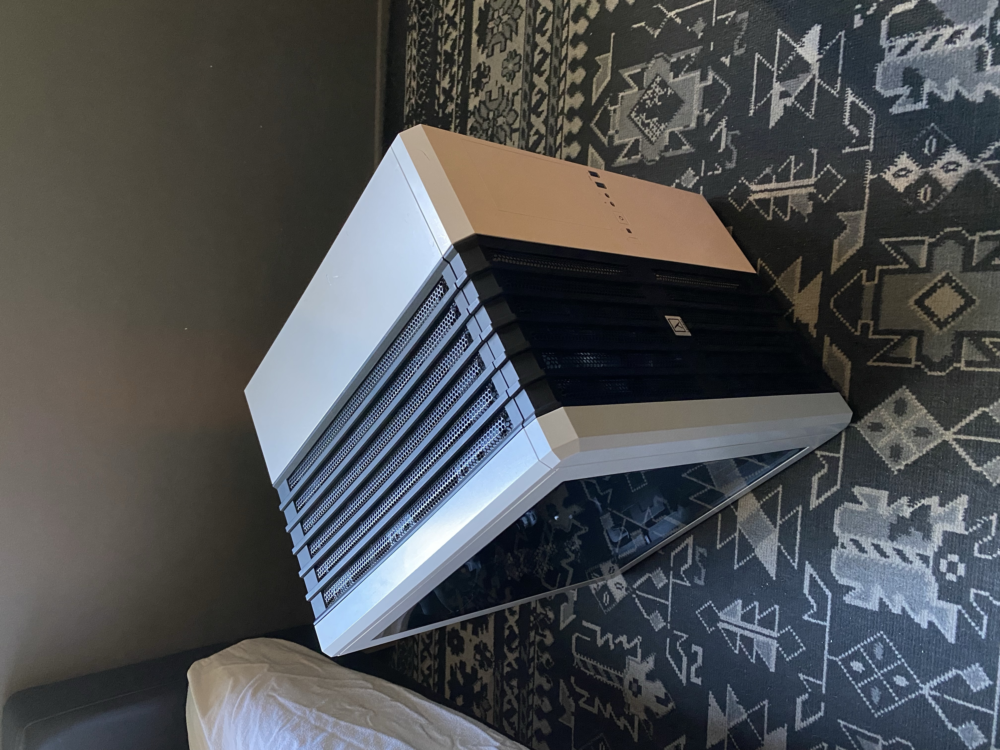
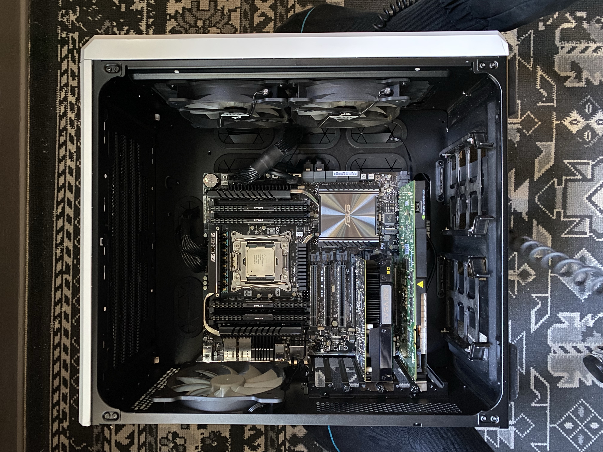
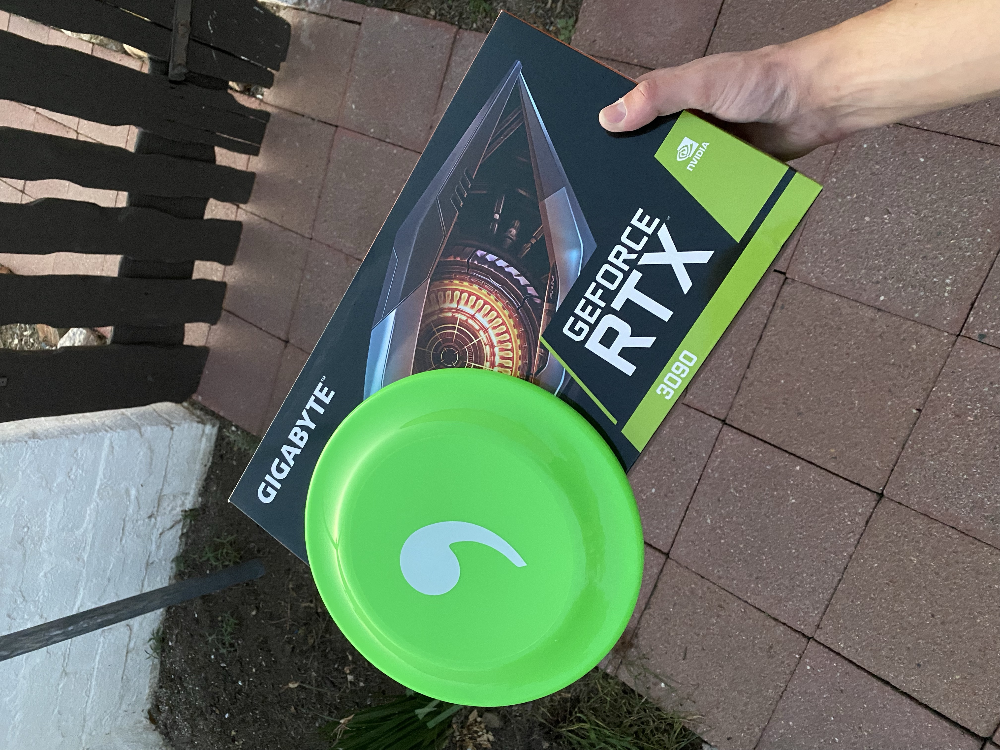

Go Mini
First Server
A few years ago during covid, I was an avid watcher of George Hotz, a well known hacker who started an aftermarket self driving car company called Comma AI.
My home labbing journey begins with this video, a live stream announcing a garage sale hosted at the Comma AI office in downtown San Diego. They were moving to their current office in Old Town. I spotted a few Lambda Labs workstation PC's (RIP to their purchasable hardware, they went all in on cloud) that they were going to be selling, and at the time I wanted to build out a Blender render machine. Up to this point, I thought homelabbing was where you hooked up a Synology NAS up to your network and called it a day. How wrong I was.
So on February 27th, 2022, I made the trek down to San Diego. The event was super fun, it was a good to meet some other people who were more technically inclined than the people I'm around on a daily basis. Met the Comma team, Adeeb Shihadeh, Harald Schäfer, George told me how much he enjoyed using these Lambda machines. Aparently it, along with the others that were being sold, were their training machines for some early versions of openpilot. Cool to own a bit of history.

Turns out they had more machines than I had seen on the video, but this is the machine I ended up with for a sweet $250. Included was a Corsair Carbide Air 240 case, Intel Core i7-6850K, ASUS X99-E-10G WS motherboard, 32GB of RAM, and an EVGA SuperNOVA 1600 T2 power supply. Very good deal, especially for the time. It obvously didn't come with the GPUs it originally came with, so I also picked up an Nvidia 1050 and a Quadro 4000 2GB.
 I even got my own Comma frisbee and an Nvidia 3090 box that I used to fake flex on my friends (remember the great GPU shortage of 2021).
This was a live stream from the garage sale while I was there. You can actually see me in the beige sweater, keeling down, looking at my workstation at 1:06, as well as the 1050 and Quadro that George picks up at 1:14, I ended up with those. Looking back, I wish I picked up one of those Nvidia Jetson TX2s, but didn't see them.
By this time, my goal went from render farm to file server based on the fact that I couldn't source the necessary GPUs without going broke. So I fitted it with a Crucial 1TB NVMe SSD and two Crucial 4TB SATA SSDs, installed Ubuntu 20.04, mirrored the SATA drives using ZFS, then started up a samba share. I set up a shell script that would back everything up to Backblaze B2 nightly using cron.
The first real upgrade I did to the workstation was change out the cooler, it came with the standard crappy box cpu cooler, and it was sort of broken and rattled when it was on. So I replaced it with Noctua NH-U12S.
Then I realized, why only have a file server, when I can also run a local LLM! The motherboard is PCIe Gen 3 and can run 4 graphics card at the full x16. Doing some looking, the 2080 Ti had the best price to power ratio. So I bought A Gigabyte 2080 Ti OC Turbo Edition, a blower card. I had planned to get three more and build it out properly, but after I bought the first one, I kind of lost steam on the local LLM project. I will possibly revisit this in the future.
As much as I love the Corsair case, the PCIe card slot backplate was ever so slightly warped so that in order to screw in the graphics card, you needed to forcably press in the back of the case. Then after you screw it in and stop pressing the back of the case, it puts a lot of stress on the PCIe slot on the motherboard, almost like it's trying to rip it off. So, I transplanted everything to Fractal Meshify 2 XL. I would have loved to put it into something smaller, but this was the only model that supported the motherboard size.
Networking, Networking, Networking
Up to this point I was using a UniFi Flex Mini. The LAN ports had my main PC, the server, and an access point, and then the WAN port being connected to my internet provider's modem/router/wifi access point garbage. What I didn't realize is that whoever installed the main AP set up the guest WIFI network without a password and it was not isolated, meaning that anyone walking by or driving by my house could access everything on my network.
Now obvously the first thing I did was set a password on the guest network and isolate it, but it made me think more about security. Other than having overall network security, I wanted to be able to seperate my server from the rest of my home network, limiting access to my office. That's when I learned about VLANs, I also learned that my flex mini was capable of VLANs. However what I learned is that you need a switch capable of level 3 switching to enable this feature.
That's when I bought the UniFi Switch Pro 24. Overkill. I really didn't need anything more than 4 ports, but needed the switching capabilities, and as far as I knew this was the cheapest way to accomplish this in Ubiquiti land. Then, I realized that I couldn't set up VLANs using the switch alone, so I set up UniFi controller on my server, and I could not for the life of me figure out how to adopt the switch. I don't really remember what the issue was, weather the feature wasn't available (though I imagine it was, why name it UniFi controller if you can't control your UniFi stuff), a bug, or if it was my own incompetence, but it didn't work. It was returned as soon as I could.
Enter the Dream Machine Special Edition. Finally what I was looking for, something I could fiddle with to my heart's content and solves all my problems. Adding the Dream Machine downstream of my ISP's router already accomplishes what I set out to do with a VLAN, isolation from the main network.

I also made the jump to 10GbE, adding on the Flex XG and installing a dual 10GbE network card onto my main PC, my server already has dual 10GbE on the motherboard. Then I realized, I couldn't push my mirrored SATA SSD's anywhere close to the limit of 10 Gig.
Mini Everything
Late 2024, my priorities began to change. I realized that I didn't really need a heater of a set up making noise in my room 24/7, let alone the fact that this isn't the most power efficient set up possible. I took a look at what I actually use this server for, and it really comes down to hosting the samba share, which had less than 4TB used.
So, to flesh out my parameters, I wanted an all NVMe SSD server, based on the fact that I couldn't fully utilize my 10GbE network, something silent or near silent, and something that is small and power efficient. So I started to look into mini PCs, and MinisForum UM790 Pro seemed to be the best option for me.
Downsizing only the server wasn't enough, luckily Ubiquiti had just released the Cloud Gateway Max, a better, smaller Dream Machine. Sadly, it came out just after the return window for the Dream Machine Special Edition.

While running Ubuntu file server raw is great, I knew it was time to move to something built for storage. TrueNAS Core was what I went with. Before comitting, I installed Proxmox and tinkered for a few days before my SSDs arrived.
I decided to fit the MinisForum with dual WD Black 8TB NVMe SSDs, luckily they were on sale. Based off of my current usage, 8TB was already more than double. And this is sort of where I didn't realize the limitations of this form factor, after buying everything I realized I needed a boot drive. The TrueNAS forums were shying away from the idea of using a USB stick as a boot drive, citing poor read/write endurance. So I decided that if endurance was the issue, why not use an solid state flash drive? SanDisk makes one, so that's what I used as the boot drive.

I still have things I need to change, like I need to add a 10GbE adapter to get the full usage out of those NVMe drives. I also want to try and replace the WIFI card that resides in an M.2 2230 slot with a small NVMe SSD to replace the usb flash drive as the boot drive. I'm unsure if it will work, but I don't see why not.
The moral of my story, I don't really know what I am doing, but I'm having fun. As well as, go mini, it's ok to downsize. Though this was more expensive than it really needed to be, and I could have gotten a better value with HDDs, it fit within my current needs. Most of the time, you don't need the biggest, craziest gear, I learned this the hard way over many years and many thousands wasted with camera gear, and I will continue to learn this. I still have the original server, so if I want to tinker I can, but my new one won't take more than it's value.